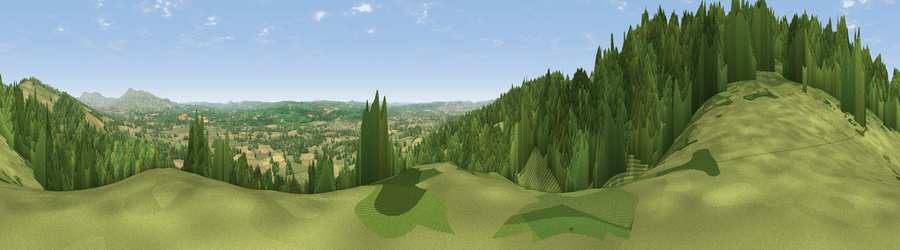

Viewpoint near Orleton
#10905 in England · top 28% of its area beats it · near OrletonThe view, rendered

A 360° render of this exact spot computed from the terrain model, tree cover and land cover — summer colours, afternoon light, calibrated against photographs of famous viewpoints. Real trees, hedges and buildings will differ in detail.
The panorama
Grey silhouette: terrain skyline in each direction (720 bearings, Earth curvature and refraction included). Dashed green: skyline with trees (+15 m) and buildings (+8 m) as obstacles. Blue strip: how far the ground is visible on each bearing.
Where the view opens
Wedge length = distance to the farthest visible ground on that bearing (vegetation-aware). Rings at 10, 25 and 50 km.
What fills the view
51% woodland · 38% grassland · 11% cropland ·
Angular shares of the visible panorama (visual magnitude), not map area. Landscape diversity 0.43 (0–1 Shannon).
Key numbers
More beautiful places nearby
The staircase of upgrades: each row has a higher view potential than everything closer. Driving times are estimates from straight-line distance, calibrated against real road routing — check an actual route before setting out.
| Place | Direction | Drive | Score |
|---|---|---|---|
| Viewpoint near Yarpole | WSW · 1 km | ~3 min | 78.1 |
| Gatley Hill | WNW · 2 km | ~6 min | 82.6 |
| Titterstone Clee | NE · 16 km | ~28 min | 83.8 |
| The Lawley | N · 29 km | ~46 min | 85.8 |
| North Hill | SE · 37 km | ~56 min | 86.8 |
| Worcestershire Beacon | SE · 38 km | ~57 min | 87.1 |
| Viewpoint near West Quantoxhead | SSW · 130 km | ~154 min | 87.9 |
| Viewpoint near West Quantoxhead | SSW · 131 km | ~155 min | 88.7 |
52.30956, -2.77990 · source: screening · position refined by local search. Computed location — check access rights before visiting.